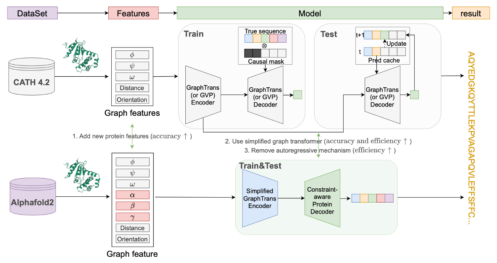
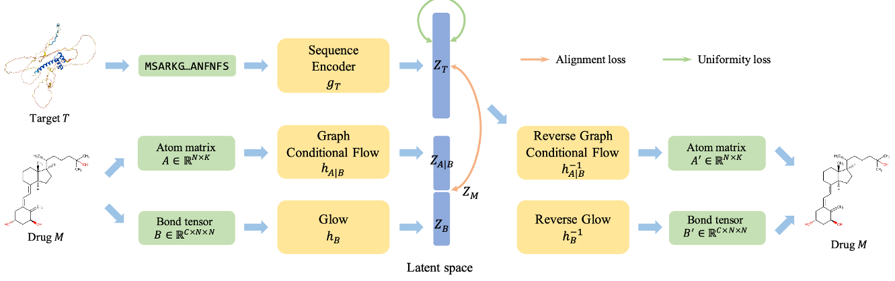
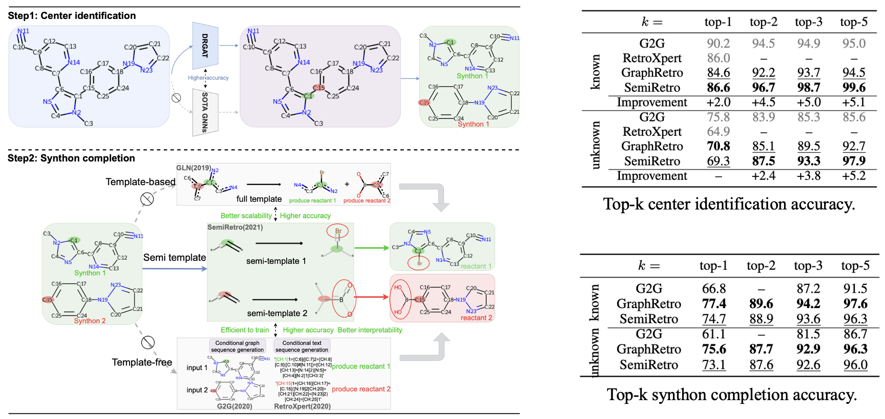

Research
2022

Protein Design
A graph protein design method and benchmark on AlphaFoldDB
We use AlphaFoldDB to establish a graph-based benchmark–AlphaDesign, and show that it significantly outperforms previous graph models.

Molecular generation
Target-aware molecular graph generation
In this paper, we aim to generate molecular drugs in a target-aware manner that bridges biological activity and molecular design.
2021

Retrosynthesis Prediction
Semi-template framework boosts deep retrosynthesis prediction
We propose SemiRetro for retrosynthesis prediction, which achieves better accuracy and attractive scalability than previ- ous methods.